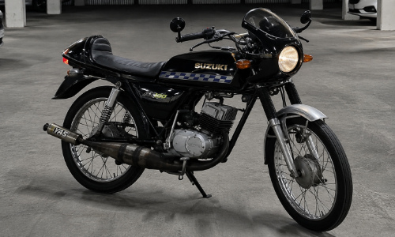
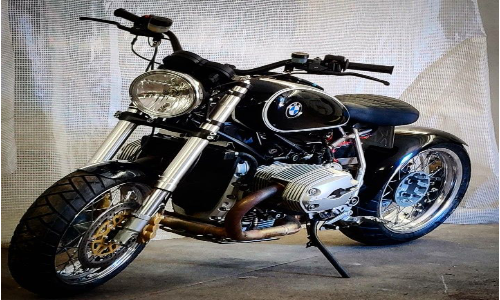

Proyecto N°1

La primera, el comienzo, el inicio y el pilar fundamental de este proyecto. Una Suzuki AX100, moto clasica si la hay, la que te lleva a comprar el pan y te saca una sonrisa en cada acelarada que das.
Proyecto N°2

El cliente queria subir el nivel a su Honda CB750 para volverla unica. Despues de arduo trabajo logramos crear una obra de arte en dos ruedas que representa el estilo de su dueño.
Proyecto N°3

Una de las motos mas hermosas que a entrado en el taller. Ya de por si tiene fuerte presencia pero con un poco mas de amor quedo como una bestia.
Proyecto N°4

Una moto creada para recorrer cualquier camino, pero esta BMW GS1200 llegó al taller buscando algo más. Trabajamos en cada detalle para darle una imagen más agresiva y personal, manteniendo intacta su esencia aventurera y logrando que destaque tanto dentro como fuera del asfalto.